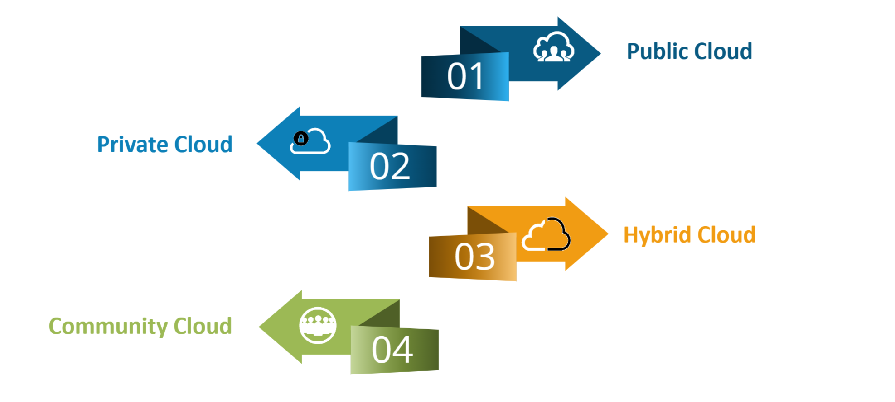
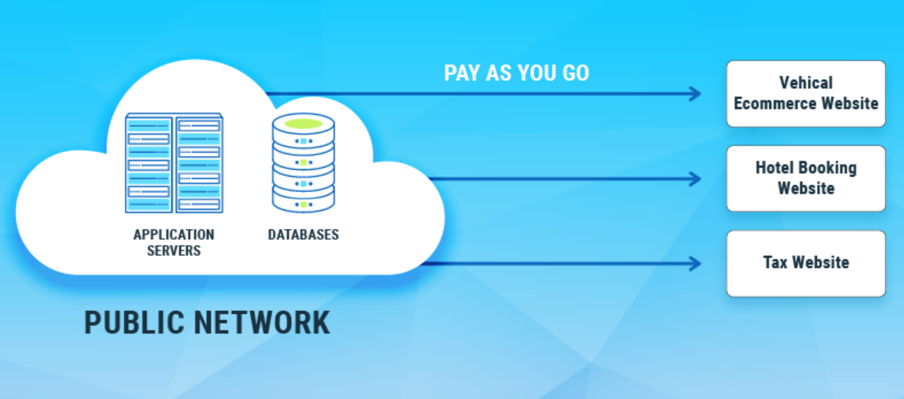
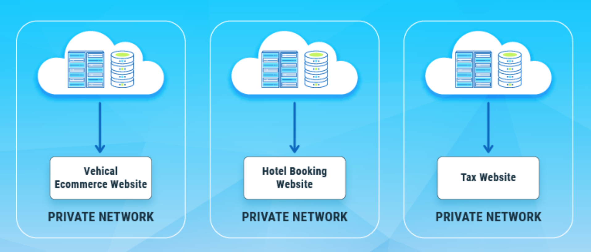
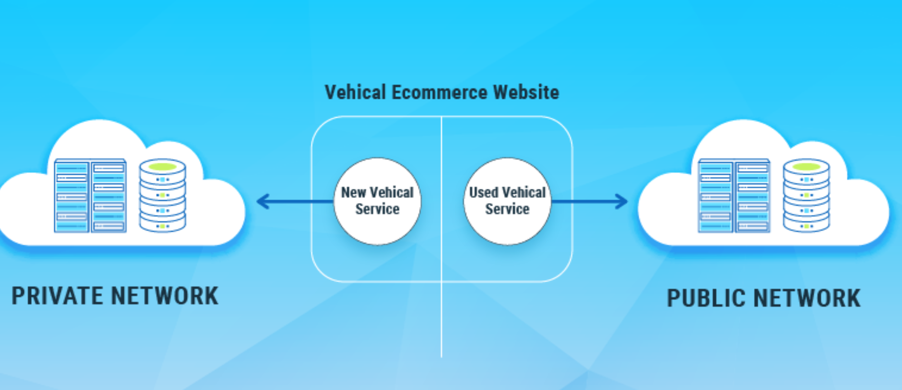
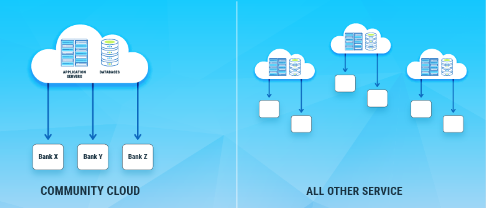

Cloud Deployment Models
Introduction
Deployment models define where cloud infrastructure is located and who has access to it.
Choosing the right deployment model is crucial for balancing cost, security, performance, and compliance.
Essentially, deployment models determine how cloud resources are made available to users and organizations.

1️⃣ Public Cloud
Public cloud resources are owned and operated by third-party providers.
Infrastructure is shared among multiple customers over the internet.
It offers high scalability and cost efficiency.
Examples: AWS, Microsoft Azure, Google Cloud Platform
Best For: Startups, web apps, scalable workloads
Pros: Cost Effective, Scalability, reliability, flexibility, and location independence
Cons: Shared Resources, Limited Control, Security Concerns, Compliance Issues
📘 Exam Line: Public cloud provides services over the internet to multiple users.

2️⃣ Private Cloud
Private cloud infrastructure is dedicated to a single organization.
It can be hosted on-premises or by a third-party provider.
It provides greater control and security.
Examples: VMware, OpenStack, Azure Stack
Best For: Banking, government, sensitive data
Pros: Used for sensitive data, compliance, and security
Cons: Constly maintenance, higher costs, limited scalability
📘 Exam Line: Private cloud is exclusively used by one organization.

3️⃣ Hybrid Cloud
Hybrid cloud combines public and private cloud environments.
Data and applications can move between both clouds.
It offers flexibility and optimized resource usage.
Examples: AWS Outposts, Azure Arc, Google Anthos
Best For: Legacy systems with cloud extension
Pros: highly scalable, flexible, and optimized resource usage/cost Effective
Cons: requies high level of management and expertise, potential security risks
📘 Exam Line: Hybrid cloud integrates public and private clouds.

4️⃣ Community Cloud
Community cloud is shared by organizations with common concerns.
Infrastructure is jointly used by a specific group.
It balances collaboration and compliance.Business communities with shared goals often use community clouds to pool resources and expertise while adhering to specific regulatory or security requirements.
Examples: Government departments, research institutions
Best For: Universities, healthcare groups
Pros: flexibility and Scalability, more control over configuration and management
Cons: Sgaring of resources, potential conflicts in management and policies
📘 Exam Line: Community cloud is shared among organizations with similar requirements.

Quick Comparison (Exam Ready)
| Model |
Ownership |
Access |
Cost |
| Public |
Cloud Provider |
Shared |
Low |
| Private |
Single Organization |
Restricted |
High |
| Hybrid |
Mixed |
Controlled |
Medium |
| Community |
Group of Organizations |
Limited Group |
Shared |
Check Your Understanding
1. Which deployment model is best for a startup with limited budget?
Public cloud, because it offers scalability and pay-as-you-go pricing.
2. Why would a bank prefer a private cloud?
For greater control, security, and compliance with regulations.
3. When is a hybrid cloud the ideal choice?
When an organization needs to combine on-premises systems with cloud scalability.
4. What is the main advantage of a community cloud?
Cost sharing and collaboration among organizations with similar requirements.
5. Which model offers the highest scalability?
Public cloud, due to virtually unlimited shared resources.
Final Takeaway
Each deployment model serves different business needs. Public cloud focuses on scalability and cost, private cloud emphasizes control and security, hybrid cloud offers flexibility, and community cloud supports collaboration. Understanding these models is essential for designing real-world cloud architectures and answering exam questions confidently.